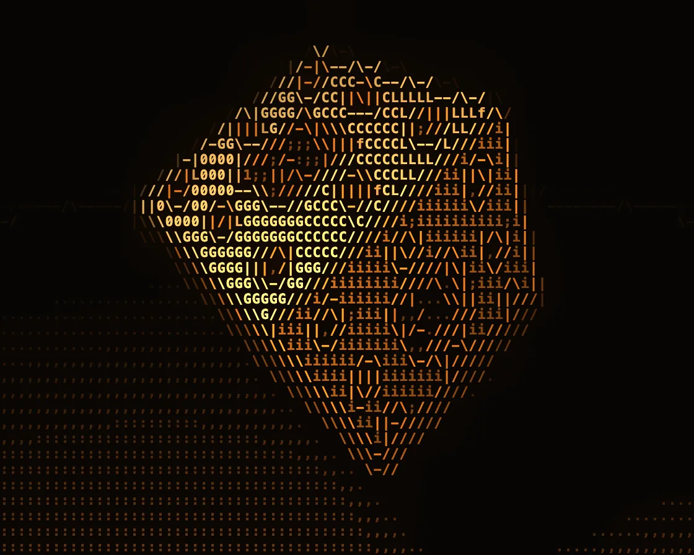

ASCII render
ASCII render is a WebGL effect: brightness picks a glyph, edges pick - / | \ by direction. One plain JavaScript file with no dependencies; add it with npx motion-library add ascii-render.

Open it live, tune it and copy the code
What is ASCII render?
A Menger sponge turns over a floor, drawn only in amber characters.
How does ASCII render work?
Raymarched per character cell; edge cells pick - / | \ from a Sobel structure tensor, and others pick glyphs from a brightness ramp in a pre-drawn atlas.
How do I add ASCII render to my website?
- In your project folder, run
npx motion-library add ascii-render. It writesanimations/ascii-render.js. Needs Node 18 or newer. - Import it and call it with a container element that has a size:
import fx from './animations/ascii-render.js'; const stop = fx(document.querySelector('#hero')); - Call
stop()to clean up, for example when a component unmounts.
Every setting below is also a flag, so you can install it already tuned: npx motion-library add ascii-render --cell 16.
What settings can I tweak?
| Setting | Flag | Default | Range | Step |
|---|---|---|---|---|
| Cell width (px) | --cell | 7 | 5 to 16 | 1 |
| Spin | --spin | 1 | 0 to 3 | 0.1 |
| Edge sensitivity | --edges | 1 | 0.3 to 3 | 0.1 |
Specifications
- Renderer
- WebGL
- Category
- Shaders & glitch
- Dependencies
- None
- File size
- 11.9 KB, unminified
- Interactive
- No: it plays on its own
- Reduced motion
- Plays the same for everyone
- Licence
- MIT-0: use it anywhere, no credit needed
Source code
// A Menger sponge (a cube with its centre and face-centres punched out, again and again) rendered entirely in text.
// The scene is raymarched at just two samples per character cell, keeping brightness, depth and surface direction.
// Each cell then chooses its character. A cell on an edge (where depth or facing jumps between neighbouring cells)
// draws the edge itself with - / | or \, picked from the direction of the jump. Every other cell picks from a ramp of
// glyphs by brightness, from a dot to @. The glyphs are drawn once with the 2D canvas into a strip (an atlas) and
// sampled from there. Amber phosphor on black, hottest highlights burning to white.
const PARAMS = { cell: 7, spin: 1, edges: 1 };
export default function (stage) {
const canvas = document.createElement('canvas');
canvas.style.cssText = 'position:absolute;inset:0;width:100%;height:100%;display:block';
stage.append(canvas);
const gl = canvas.getContext('webgl2', { antialias: false });
if (!gl || !gl.getExtension('EXT_color_buffer_float')) { stage.textContent = 'This needs WebGL2 with float render targets.'; return () => canvas.remove(); }
const RAMP = ' .,:;i1tfLCG08@', EDGE = '-/|\\', GLYPHS = RAMP + EDGE, NG = GLYPHS.length, NR = RAMP.length;
const vs = `#version 300 es
in vec2 p; out vec2 uv; void main() { uv = p * .5 + .5; gl_Position = vec4(p, 0, 1); }`;
// ── pass 1: the sponge at 2×2 samples per cell: brightness, depth, view-space normal
const sceneFs = `#version 300 es
precision highp float; in vec2 uv; out vec4 o; uniform vec2 R, CA; uniform float T;
mat2 rot(float a) { float c = cos(a), s = sin(a); return mat2(c, -s, s, c); }
float sdBox(vec3 p, vec3 b) { vec3 q = abs(p) - b; return length(max(q, 0.)) + min(max(q.x, max(q.y, q.z)), 0.); }
vec2 map(vec3 p) {
float fl = p.y + 1.85; // a floor, to catch the sponge's lace-like shadow
p.xz *= rot(T * .3); p.xy *= rot(sin(T * .21) * .25); p.yz *= rot(.5 + .15 * sin(T * .17)); // turning, gently rocking
float d = sdBox(p, vec3(1)), s = 1., hole = 0.;
for (int m = 0; m < 2; m++) { // punch the cross-shaped holes, three times smaller each round
vec3 a = mod(p * s, 2.) - 1.; s *= 3.;
vec3 r = abs(1. - 3. * abs(a));
float c = (min(max(r.x, r.y), min(max(r.y, r.z), max(r.z, r.x))) - 1.) / s;
if (c > d) { d = c; hole = float(m + 1); }
}
return fl < d ? vec2(fl, -1.) : vec2(d, hole);
}
vec3 nrm(vec3 p) { vec2 e = vec2(.0015, -.0015); return normalize(e.xyy * map(p + e.xyy).x + e.yyx * map(p + e.yyx).x + e.yxy * map(p + e.yxy).x + e.xxx * map(p + e.xxx).x); }
float shadow(vec3 ro, vec3 rd) { float r = 1., t = .02; for (int i = 0; i < 56; i++) { float h = map(ro + rd * t).x; r = min(r, 30. * h / t); t += clamp(h, .01, .15); if (r < .002 || t > 5.) break; } return clamp(r, 0., 1.); }
void main() {
vec2 q = (uv * 2. - 1.) * vec2(R.x * CA.x / (R.y * CA.y), 1.); // cells are taller than wide: correct for it
vec3 ro = vec3(0, 1.7, -4.3), ta = vec3(0, -.25, 0);
ro.xz *= rot(sin(T * .1) * .5);
vec3 f = normalize(ta - ro), r = normalize(cross(vec3(0, 1, 0), f)), u = cross(f, r), rd = normalize(f * 2.05 + r * q.x + u * q.y);
float t = 0.; vec2 h = vec2(1);
for (int i = 0; i < 120; i++) { h = map(ro + rd * t); if (h.x < .001) break; t += h.x; if (t > 14.) break; }
if (t > 14.) { o = vec4(0, 20, 0, 0); return; }
// a lamp up and to the left: its light falls off across each face, so flat faces become gradients of glyphs
vec3 p = ro + rd * t, n = nrm(p), lp = vec3(-2.2, 3.4, -2.), L = normalize(lp - p);
float att = 14. / (4. + dot(lp - p, lp - p));
float dif = max(dot(n, L), 0.) * shadow(p + n * .003, L) * att;
float sp = pow(max(dot(reflect(rd, n), L), 0.), 24.);
float ao = 1. - .3 * max(h.y, 0.); // deeper holes are darker
float fill = max(dot(n, normalize(vec3(.7, -.2, -.5))), 0.) * .22; // a dim fill light from the other side
float lum = (.06 + .8 * dif + fill + .6 * sp) * ao;
if (h.y < 0.) lum = (.03 + .32 * dif) * smoothstep(12., 4.5, t); // the floor is dimmer and fades into the dark
vec3 nv = vec3(dot(n, r), dot(n, u), dot(n, f)); // the normal as the camera sees it
o = vec4(lum, t, nv.xy);
}`;
// ── pass 2: choose a glyph per cell and draw it from the atlas
const textFs = `#version 300 es
precision highp float; in vec2 uv; out vec4 o;
uniform sampler2D G, AT; uniform vec2 CELL, GRID; uniform float NG, NR, ES, T;
vec4 cellAt(vec2 c) { return textureLod(G, (c + .5) / GRID, 0.); } // linear filtering = the average of its 2×2 samples
void main() {
vec2 c = floor(gl_FragCoord.xy / CELL), f = fract(gl_FragCoord.xy / CELL);
// which cells are edges: object cells next to background or in front of a depth step (silhouettes), and cells
// whose surface faces a different way from the cell to the right or above (creases). Testing only one side keeps
// every edge one character wide
vec4 g = cellAt(c), cr = cellAt(c + vec2(1, 0)), cu = cellAt(c + vec2(0, 1)), cl = cellAt(c - vec2(1, 0)), cd = cellAt(c - vec2(0, 1));
bool obj = g.y < 19.;
vec4 zn = vec4(cr.y, cu.y, cl.y, cd.y);
float sil = obj && any(greaterThan(zn - g.y, vec4(g.y * .1))) ? 1. : 0.;
vec3 n0 = vec3(g.zw, sqrt(max(0., 1. - dot(g.zw, g.zw))));
float crease = 0.;
if (obj && cr.y < 19.) crease = max(crease, length(n0 - vec3(cr.zw, sqrt(max(0., 1. - dot(cr.zw, cr.zw))))));
if (obj && cu.y < 19.) crease = max(crease, length(n0 - vec3(cu.zw, sqrt(max(0., 1. - dot(cu.zw, cu.zw))))));
float isEdge = max(sil, step(.5 / ES, crease));
// the edge's direction: a Sobel filter over the 3×3 cells (occupancy, depth steps, normal), merged in a structure
// tensor so jumps of either sign agree on one direction
vec4 gx = vec4(0), gy = vec4(0);
for (int j = -1; j <= 1; j++) for (int i = -1; i <= 1; i++) {
vec4 sm = cellAt(c + vec2(i, j));
float occ = step(sm.y, 19.);
vec4 v = vec4(occ * 2. + clamp((min(sm.y, 20.) - g.y) / g.y, -.3, .3) * 4., sm.zw * occ, sqrt(max(0., 1. - dot(sm.zw, sm.zw))) * occ);
float wx = float(i) * (j == 0 ? 2. : 1.), wy = float(j) * (i == 0 ? 2. : 1.);
gx += v * wx; gy += v * wy;
}
gx /= CELL.x; gy /= CELL.y; // per pixel, so slopes match what you see
vec3 J = vec3(0);
for (int k = 0; k < 4; k++) J += vec3(gx[k] * gx[k], gx[k] * gy[k], gy[k] * gy[k]);
float ang = mod(.5 * atan(2. * J.y, J.x - J.z) + 1.5708, 3.14159); // the edge runs across the gradient
float lum = g.x, gi;
if (isEdge > .5) {
float a = degrees(ang);
gi = NR + (a < 22. || a >= 158. ? 0. : a < 68. ? 1. : a < 112. ? 2. : 3.);
} else gi = floor(clamp(pow(lum, .8), 0., .999) * NR);
float m = texture(AT, vec2((gi + f.x) / NG, f.y)).r;
// amber phosphor: dim glyphs are deep orange, the brightest go white-hot; far cells fade
float fog = exp(-max(g.y - 3.2, 0.) * .35);
float b = isEdge > .5 ? 1.1 : .35 + 1. * lum;
vec3 col = mix(vec3(1., .5, .1), vec3(1., .78, .4), smoothstep(.2, .7, lum)) * b;
col = mix(col, vec3(1., .97, .9), smoothstep(.75, 1.1, lum) * (1. - isEdge));
col *= m * fog * 1.25;
// a faint glow behind the text, from a blurred copy of the brightness
float halo = textureLod(G, uv, 3.).x * step(textureLod(G, uv, 3.).y, 19.);
col += vec3(1., .45, .1) * .07 * halo;
col += vec3(.03, .02, .01);
o = vec4(col, 1);
}`;
const sh = (t, s) => { const x = gl.createShader(t); gl.shaderSource(x, s); gl.compileShader(x); if (!gl.getShaderParameter(x, gl.COMPILE_STATUS)) throw new Error(gl.getShaderInfoLog(x)); return x; };
const mk = fs => { const p = gl.createProgram(); gl.attachShader(p, sh(gl.VERTEX_SHADER, vs)); gl.attachShader(p, sh(gl.FRAGMENT_SHADER, fs)); gl.bindAttribLocation(p, 0, 'p'); gl.linkProgram(p); if (!gl.getProgramParameter(p, gl.LINK_STATUS)) throw new Error(gl.getProgramInfoLog(p)); const u = {}; return { p, u: n => u[n] ??= gl.getUniformLocation(p, n) }; };
const scene = mk(sceneFs), text = mk(textFs);
gl.bindBuffer(gl.ARRAY_BUFFER, gl.createBuffer()); gl.bufferData(gl.ARRAY_BUFFER, new Float32Array([-1, -1, 3, -1, -1, 3]), gl.STATIC_DRAW);
gl.enableVertexAttribArray(0); gl.vertexAttribPointer(0, 2, gl.FLOAT, false, 0, 0);
const gtex = gl.createTexture(), gfb = gl.createFramebuffer(), atlas = gl.createTexture();
let CW = 8, CH = 14, COLS = 1, ROWS = 1, key = '';
// the atlas: every glyph drawn once, white on black, side by side at the exact device-pixel cell size
const buildAtlas = () => {
const a = document.createElement('canvas'); a.width = CW * NG; a.height = CH;
const g = a.getContext('2d');
g.fillStyle = '#000'; g.fillRect(0, 0, a.width, a.height);
g.fillStyle = '#fff'; g.textAlign = 'center'; g.textBaseline = 'middle';
g.font = `bold ${Math.round(CH * 0.86)}px ui-monospace, Menlo, Consolas, monospace`;
for (let i = 0; i < NG; i++) g.fillText(GLYPHS[i], i * CW + CW / 2, CH * 0.53);
gl.bindTexture(gl.TEXTURE_2D, atlas); gl.pixelStorei(gl.UNPACK_FLIP_Y_WEBGL, true);
gl.texImage2D(gl.TEXTURE_2D, 0, gl.RGBA, gl.RGBA, gl.UNSIGNED_BYTE, a);
gl.texParameteri(gl.TEXTURE_2D, gl.TEXTURE_MIN_FILTER, gl.NEAREST); gl.texParameteri(gl.TEXTURE_2D, gl.TEXTURE_MAG_FILTER, gl.NEAREST);
gl.texParameteri(gl.TEXTURE_2D, gl.TEXTURE_WRAP_S, gl.CLAMP_TO_EDGE); gl.texParameteri(gl.TEXTURE_2D, gl.TEXTURE_WRAP_T, gl.CLAMP_TO_EDGE);
};
const layout = () => {
const w = stage.clientWidth || 1, h = stage.clientHeight || 1, d = Math.min(devicePixelRatio, 2);
canvas.width = w * d | 0; canvas.height = h * d | 0;
const cw = Math.max(4, Math.round(Math.max(4, PARAMS.cell) * d)), ch = Math.round(cw * 1.75);
const k = [canvas.width, canvas.height, cw].join();
if (k === key) return; key = k;
CW = cw; CH = ch; COLS = Math.ceil(canvas.width / CW); ROWS = Math.ceil(canvas.height / CH);
buildAtlas();
gl.bindTexture(gl.TEXTURE_2D, gtex); gl.texImage2D(gl.TEXTURE_2D, 0, gl.RGBA16F, COLS * 2, ROWS * 2, 0, gl.RGBA, gl.HALF_FLOAT, null);
gl.texParameteri(gl.TEXTURE_2D, gl.TEXTURE_MIN_FILTER, gl.LINEAR_MIPMAP_LINEAR); gl.texParameteri(gl.TEXTURE_2D, gl.TEXTURE_MAG_FILTER, gl.LINEAR);
gl.texParameteri(gl.TEXTURE_2D, gl.TEXTURE_WRAP_S, gl.CLAMP_TO_EDGE); gl.texParameteri(gl.TEXTURE_2D, gl.TEXTURE_WRAP_T, gl.CLAMP_TO_EDGE);
gl.bindFramebuffer(gl.FRAMEBUFFER, gfb); gl.framebufferTexture2D(gl.FRAMEBUFFER, gl.COLOR_ATTACHMENT0, gl.TEXTURE_2D, gtex, 0);
};
const ro = new ResizeObserver(layout); ro.observe(stage); layout();
let raf, t = 0, last = performance.now();
function frame(now) {
const dt = Math.min(0.05, (now - last) / 1000); last = now; t += dt * PARAMS.spin;
layout();
gl.bindFramebuffer(gl.FRAMEBUFFER, gfb); gl.viewport(0, 0, COLS * 2, ROWS * 2); gl.useProgram(scene.p);
gl.uniform2f(scene.u('R'), COLS * 2, ROWS * 2); gl.uniform2f(scene.u('CA'), CW, CH); gl.uniform1f(scene.u('T'), t);
gl.drawArrays(gl.TRIANGLES, 0, 3);
gl.bindTexture(gl.TEXTURE_2D, gtex); gl.generateMipmap(gl.TEXTURE_2D);
gl.bindFramebuffer(gl.FRAMEBUFFER, null); gl.viewport(0, 0, canvas.width, canvas.height); gl.useProgram(text.p);
gl.activeTexture(gl.TEXTURE0); gl.bindTexture(gl.TEXTURE_2D, gtex); gl.uniform1i(text.u('G'), 0);
gl.activeTexture(gl.TEXTURE1); gl.bindTexture(gl.TEXTURE_2D, atlas); gl.uniform1i(text.u('AT'), 1);
gl.uniform2f(text.u('CELL'), CW, CH); gl.uniform2f(text.u('GRID'), COLS, ROWS); gl.uniform1f(text.u('NG'), NG); gl.uniform1f(text.u('NR'), NR);
gl.uniform1f(text.u('ES'), Math.max(0.2, PARAMS.edges)); gl.uniform1f(text.u('T'), t);
gl.drawArrays(gl.TRIANGLES, 0, 3);
raf = requestAnimationFrame(frame);
}
raf = requestAnimationFrame(frame);
return () => { cancelAnimationFrame(raf); ro.disconnect(); gl.getExtension('WEBGL_lose_context')?.loseContext(); canvas.remove(); };
}